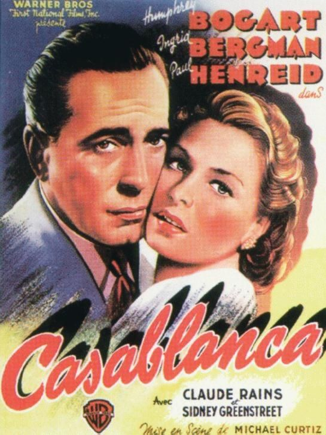

|
Catch me if you canCatch Me If You Can is a 2002 American biographical crime film based on the life of Frank Abagnale, who, before his 19th birthday, successfully performed cons worth millions of dollars by posing as a Pan American World Airways pilot, a Georgia doctor, and a Louisiana parish prosecutor. His primary crime was check fraud; he became so experienced that the FBI eventually turned to him for help in catching other check forgers. The film was directed by Steven Spielberg and stars Leonardo DiCaprio and Tom Hanks, with Christopher Walken, Martin Sheen, Nathalie Baye and Amy Adams in supporting roles. |
Ensemble c'est toutHunting and Gathering (French: Ensemble, c'est tout) is a 2007 French romantic film based on the writer Anna Gavalda's 2004 novel Hunting and Gathering (French: Ensemble, c'est tout). It was directed by Claude Berri, who also wrote the screenplay, and stars Audrey Tautou, Guillaume Canet, Laurent Stocker, Françoise Bertin and Alain Sachs. It premiered on 21 March 2007. |
 |
 |
L'enfant LionDeux enfants africains, Oulé et son amie Léna, sont vendus comme esclaves à un puissant seigneur des hautes terres. Léna raconte... Au village de Pama, sur les terres de Baoulé, hommes et lions vivaient en paix, les premiers sous la protection des seconds. Le même jour, naquirent Oulé, fils du chef Moko Kaouro, et Sirga, fille de Ouara la reine des lions. La brousse décida qu'ils seraient frère et soeur... |
CasablancaA Casablanca, pendant la Seconde Guerre mondiale, le night-club le plus couru de la ville est tenu par Rick Blaine, un Américain en exil. Mais l'établissement sert également de refuge à ceux qui voudraient se procurer les papiers nécessaires pour quitter le pays. Lorsque Rick voit débarquer un soir le dissident politique Victor Laszlo et son épouse Ilsa, quelle n'est pas sa surprise de retrouver dans ces circonstances le grand amour de sa vie... |
 |